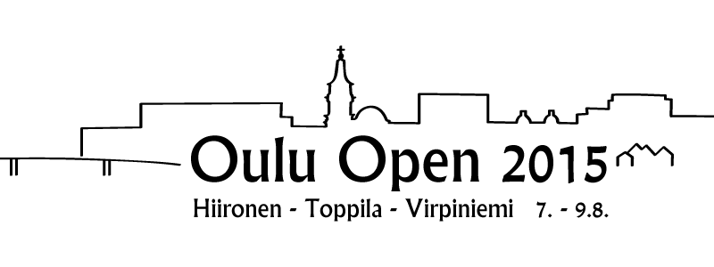

Kirjaudu sisään | Rekisteröidy

Kisakone

Virtuaalinen pelaajakokous nyt sivupalkissa!
Lue!
Oulu Open - Pohjoisen Haastavin Kisa
Oulu Open haastaa kisaajat jälleen 7-9.8.2015! Kisan koko on kasvanut täksi vuodeksi kolmipäiväiseksi ja kolmen radan mittaiseksi. Radat ovat Oulun perinteikkäimmät, suosituimmat ja haastavimmat: Hiironen, Toppila ja Virpiniemi. Tässä kisassa, jos missä, mitataan sekä oululaisten kotikenttäetu että kauempaa tulleiden todelliset taidot.
Kilpailun järjestävät yhteistyössä BSC Disc Golf Team ry ja Oulun Frisbeeseura ry.
Kilpailun pääsponsorina toimii oululainen Powergrip - Melko Hyvä Frisbeekauppa.

Radat
Hiironen
Oulun vanhin rata on palvellut käyttäjiä jo vuodesta nappi ja kypärä. Maastona Hiironen on perin tasainen, mutta se ei tee radasta yhtään helpompaa. Ratkaisevia väyliä ovat esimerkiksi seiskaväylän pelottava suonylitys sekä toisen metsäväylän pahamaineinen pilliväylä ojan viertä pitkin. Kisarata myötäileekin vakiorataa hyvin pienin muutoksin.
Toppila
Toppila on maastoltaan haastava ja yleisöystävällinen, eikä ole ihme, että Toppila on saanut kunnian toimia vuosien 2011 ja 2014 SM-kisojen näyttämönä. Vuonna 2016 Toppilassa pelataan EM-kisat, jotka esittelevät Oulun ylpeyden todella laajalle yleisölle. Kokemattomalle pelaajalle legendaariset Toppila-tuulet voivat tehdä tepposensa esimerkiksi pahamaineisella rantaväylällä, jossa kori on asetettu liki rantaviivaan. Kisassa pelataan Toppilan vakiorata muutetulla järjestyksellä ja SM-kisojen ykkösväylällä höystettynä.
Virpiniemi
Virpiniemi on kisan radoista uusin, mutta myöskin haastavin ja siten ansaitusti kisan finaalikierroksen näyttämö. Lenkkipolkujen ja mäkihyppytornin ympärille rakennetun radan yleisilme on metsäinen, mutta korkeusvaihteluitakaan ei ole unohdettu. Virpiniemessä pelattiin vuonna 2013 EuroTourin osakilpailu Finnish Open, jossa taitojaan väläytti nykyään jenkkilää valloittava Simon Lizotte. Virpiniemen kisarata poikkeaa vakioradasta muutaman väylän verran.
Osallistuminen
Kisassa järjestetään Pro-luokat MPO, MPM, MPG ja FPO sekä amatööriluokat MJ1, MA1, MA3 ja FA1. Osallistumismaksu Pro-luokkiin on 35 euroa ja amatööriluokkiin 25 euroa. Kisaan mahtuu 144 pelaajaa. Järjestäjät varaavat 12 villiä korttia.
Ilmoittautuminen alkaa 18.4. kello 12:00. Ilmoittautumisprosessi on seuraava:
- Luokkakiintiöt puretaan 18.5. ja tässä ensimmäisessä vaiheessa maksujen tulee olla perillä 29.5. mennessä.
- Maksamattomat poistetaan kisasta 1.6., jonka jälkeen jonosta noustaan kisaan mukaan.
- Tässä toisessa vaiheessa kisaan päässeiden maksujen tulee olla perillä 30.6. mennessä.
- Toisen vaiheen jälkeen maksamattomat poistetaan 2.7., jonka jälkeen alkaa ilmoittautumisen viimeinen vaihe.
- Ilmoittautuminen suljetaan 31.7. kello 23:59. ja lopullinen osallistujalista on tiedossa 3.8.
Ilmoittautumisajan sulkeutumisen jälkeen tulleista perumisista ei palauteta kisamaksua muuten kuin lääkärintodistuksella, joka on esitettävä ennen kisan alkua.
Osallistumiseen vaaditaan vähintään SFL:n B-lisenssi.
Palkinnot
Payout Pro-luokissa on 80% ja amatööriluokissa 50%. Palkinnoille pääsee pro-luokissa top 25% ja amatööriluokissa top 20%. Jokaisen luokan top3:ssa palkinnoille päässeet saavat mukaansa myös muistopalkinnon. Amatööriluokissa palkinnot ovat tavarapalkintoja ja lahjakortteja.
Kilpailun pääsponsori Powergrip toimittaa kaikki amatöörisarjojen palkinnot ja tarjoaa lisäksi sivukisoihin 200 euron arvosta palkintoja!
Toiminta kisapäivänä
Jokaisen pelaajan tulee ilmoittautua paikalleolevaksi viimeistään 10 minuuttia ennen ilmoitettua lähtöaikaansa kisakeskuksessa. Mikäli rata ei ole tuttu, on suotavaa tulla tutustumaan ratakarttaan jo tätä ennen. Ennen kierrosta lämmittely on sallittua vain erikseen osoitetuilla lämmittelyalueilla. Kierroksen jälkeen tuloskortit palautetaan, kierroksen kokonaistulos laskettuna, kisakeskukseen viivyttelemättä. Tupakointi on sallittua vain ennen kierrosta ja sen jälkeen, odotellessa väylän vapautumista ja siirtymillä, ei koskaan kesken väylän pelaamisen.
| Nimi | Oulu Open 2015 sponsored by Powergrip |
| Paikka | Oulu |
| Aika | 07. - 09.08.2015 |
| Taso | Erilliskilpailu |
| Yhteystiedot | moc.flogcsidcsb)ta(inuoj ,nenituunK inuoJ DT |
Aikataulu
Kilpailussa käytetään porrastettua lähtöä. Ryhmän kaikkien kilpailijoiden tulee ilmoittautua viimeistään 10 minuuttia ennen ryhmän lähtöaikaa. Ensimmäiset ryhmät lähtevät perjantaina kello 9:30 ja lauantaina ja sunnuntaina kello 9:00.
| Kierros | Lähtöaika |
|---|---|
| Kierros 1 | 07.08.2015 09:30 |
| Kierros 2 | 08.08.2015 09:00 |
| Kierros 3 | 09.08.2015 09:00 |
Ajankohtaiset uutiset
Palkinnot maksettu, lahjakortit tilattu
Rahapalkinnot on maksettu tileille ja lahjakorttien saajien sähköpostiosoitteet ilmoitettu Powergripille. TD-raportti PDGA:lle lähtee varmaankin tunnin sisään.
CTP-kisan voittajat on unohtunut ilmoittaa, joten tässäpä tulee:
1. Timo Kälkäjä 93cm, Roll-A-Stool ja Nalgene-juomapullo
2. Kristian Komulainen, 153.2cm, Nalgene-juomapullo
3. Mika Härkönen, 153.3cm, Nalgene-juomapullo
Tämä lienee viimeinen ilmoitusluontoinen asia tämän kisan tiimoilta, joten ei muuta kuin ensi vuoteen!
Kisa on käyty, voittajat selvillä
Tämän vuoden kisa on nyt kisattu. Voiton MPO:ssa vei Jarkko Naukkarin Sudden Deathin kautta. Toiseksi sijoittui Henri Koivumaa ja kolmannen sijan jakoivat Mikko Perttunen ja Henry Johansson, joista ensiksi mainittu vei sudarissa pokaalin kotia.
Muiden luokkien voittajat: MPM Kenth Lindqvist, MPG Riku Kaajakari, FA1 Kajsa Wickström, MJ1 Valtteri Korhonen, MA1 Aku Tervo (sudarilla), MA3 Jyrki Vaara.
Täydelliset tulokset ovat nähtävillä tulossivulla. Alla lopulliset palkintosijat. Amatööriluokissa palkinnot lahjakortteja Powergripille, pro-luokissa palkinnot rahana, paitsi tähdellä (*) merkityt lahjakortteina.
FA1 (Advanced Women)
1. 47€ Kajsa Wickström
2. 28€ Paula Määttä
MA1 (Advanced Amateur)
1. 128€ Aku Tervo
2. 90€ Miikka Liias
3. 64€ Niklas Määttä
4. 47€ Marko Lipponen
5. 36€ Janne Laurikainen
5. 36€ Jouni Huhtamaki
7. 26€ Ilkka Silkamo
MA3 (Recreational Amateur)
1. 132€ Jyrki Vaara
2. 92€ Janne Koskela
3. 62€ Mikko Karhu
4. 48€ Reima Riihimäki
5. 38€ Sammeli Portti
6. 9.5€ Juha Koskelo
6. 9.5€ Rami Niemi
6. 9.5€ Erno Niilivirta
MJ1 (Juniorit-19)
1. 50€ Valtteri Korhonen
MPG (Seniorit-50)
1. 140€ Riku Kaajakari
2. 84€ Eero Savilaakso
MPM (Seniorit-40)
1. 186€ Kenth Lindqvist
2. 118€ Esa Luosujärvi
3. 88€ Jori Löytynoja
MPO (Avoin Pro)
1. 227€ Jarkko Naukkarinen *
2. 159€ Henry Koivumaa
3. 98€ Mikko Perttunen *
3. 98€ Henry Johansson
5. 72€ Petri Jokela
6. 51€ Mika Körkkö *
6. 51€ Juha Ylipahkala *
Ensimmäinen pelipäivä ohi
Perjantain tulokset ja lauantain lähtölistat ovat nyt nähtävillä.
Toppilan parikisassa oli 34 osallistujaa. Tulokset ja palkinnot:
1. Alatalo J & Leppävuori S, 44 heittoa, 170e
2. Kälkäjä A & Kälkäjä A, Tervo A & Ylätalo M, Kostet & Anttila 45 heittoa, 56.60e per pari
Rating Raiser -palkinnot Hiirosesta veivät Tomi Tolonen ja Teemu Korhonen. Teemu heitti 92 pistettä yli oman ratingin, mikä on toki kova veto, mutta Tomi nykäisi vielä paremmaksi pistäen komeat 142 pojoa parannusta. Molemmat voivat noutaa sunnuntaina kisatoimistosta Virpiniemen ylämajalta Roll-A-Stoolin palkinnoksi. Onnea!
Sivukisoja: Rating Raiser ja Closest To Pin
Kisan sponsori Powergrip tarjoaa palkinnot seuraaviin sivukisoihin:
Hiirosessa ja Toppilassa voimassa on Rating Raiser -kisa, jossa kaksi eniten ratinkinsa yli heittänyttä voittaa itselleen Dynamic Discin Roll-A-Stoolin, kesän muotiväreissä, tottakai. Kisan tulos katsotaan pelaajan kilpailun aikana voimassa olevasta ratingista ja kierroksen alustavasta ratingista. Reiluuden nimissä kukin voi saada vain yhden Rating Raiser -palkinnon, eli jos sama pelaaja heittää top2-tuloksen myös Toppilassa, siirtyy palkinto listalla seuraavalle. Rating Raiser -palkinnot ovat noudettavissa sunnuntaina Virpiniemestä kisatoimistosta.
Virpiniemessä pelataan lisäksi Closest To Pin -kilpailu kisaväylällä 7. Tässä kisassa mitataan se, kuka saa avausheittonsa lähimmäksi korin putkea. Retee-heitolla ei siis voi päästä palkinnoille. Kisan ykkönen saa Rolla-A-Stoolin ja Nalgenen juomapullon, kakkonen ja kolmonen joutuvat tyytymään pelkkään juomapulloon. Väylällä on mittamies, joka myös kirjaa tulokset. Mikäli mittamies on tauolla, pooli kirjaa tuloksen (tai tulokset) itse, mikäli tulos oikeuttaa paikkaan kärkikolmikossa. CTP-palkinnot jaetaan Pro-luokkien palkintojenjaossa.
Ensimmäisen kierroksen ryhmät julkaistu
Ensimmäisen kierroksen ryhmät ovat nyt näkyvillä aikataulusivulla.